3-3． Editing Global Map by TileMill¶
In this chapter, we actually perform editing of display attribute of map data. In TileMill highly flexible setting of display attribute is possible by CartoCSS, therefore we cannot explain all the details. Here explained is the most basic way of setting. Refer to the TileMill document （http://www.mapbox.com/tilemill/docs/ ）for details.
3-3-1． Alternation of display attribute¶
If [Save & Style] is selected on adding a vector layer, the default style is set as in Chart 3-3-1.
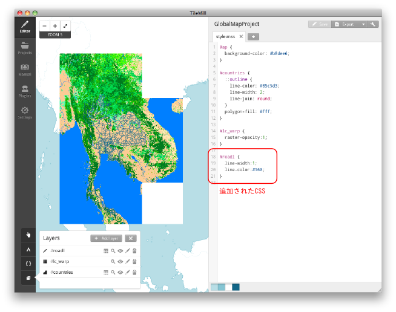
Chart 3-3-1． CSS added
Here we explain CSS simply. CSS is the abbreviation of Cascading Style Sheets and it is used as a style sheet which designates the display method of HTML or XML.
Based on CSS added to Chart 3-3-1, a basic syntax of CSS is explained in Chart3-3-2.
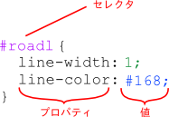
Chart 3-3-2． Basic syntax of CSS
The selector specifies the object to which the following style is applied. When the selector name starts with [#], the object is its ID. When it starts with [.], the object is its class.
Describe the definition of the style in the part enclosed with [{}] (block). The definition of the style is specified with the combination of the property and its value. Type a colon at the end of the property, a semi-colon at the end (declaration) of the property and value.
Enabled property is decided by the data of the application object. The example above is a style for the vector data of the line. The line width is specified as 1 pixel, the RGB value of the line color as (17, 102, 136). The unit of the line is pixel.
The color can be specified with not only a key word such as “yellow” or “black” but also the value of RGB. The color value is specified by hexadecimal digits in the order of RGB following [#].The value which may be provided is a decimal number in the range 0-255 (8bit) or a hexadecimal number in the range of 00-ff. As an example, when you want to make the RGB value （34, 124, 207）, convert each value to hexadecimal numbers and specify as 「#227ccf」（34 => 22, 124 => 7c, 207 => cf）. In Chart 3-3-2, the color value is written with a three-digit number. This is the abbreviation of 「#116688」. Therefore, if hexadecimal 11, 66, 88 are converted to decimal numbers, they become 17, 102, 136 respectively. However, in TileMill the sample of the colors specified is shown at the bottom of a window since the actual color is hard to grasp only with the numbers.
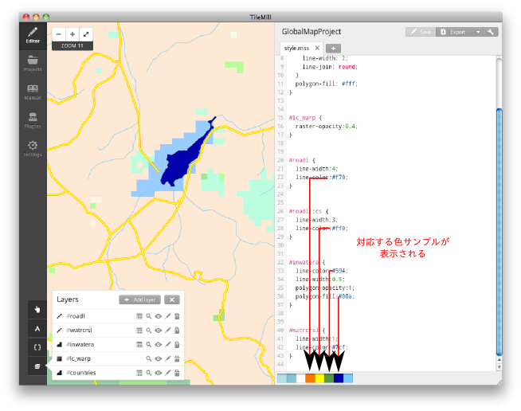
Chart 3-3-3． Example of color specification of CSS and color samples
以下のコードは各レイヤーに色と線幅を設定した例で、各レイヤーを追加するときに「Save & Style」を選択してデフォルトの表示属性が設定されている状態から、色を変更したものです。以下のコードによる表示結果を図３－３－４に示します。
The following code is an example where the color and line width are set to each layer. Here, the color is changed from the condition where the default display attribute is set by selecting [Save & Style] when adding each layer. The display result of the following code is shown in Chart 3-3-4.
Code 3-3-1
Map {
background-color: #b8dee6;
}
#countries { // Global map layer added on creating the project
::outline {
line-color: #85c5d3;
line-width: 2;
line-join: round;
}
polygon-fill: #fff;
}
#lc_warp { // Global map land use raster layer
raster-opacity:0.4; // Transparency is set here for better visibility
}
#roadl { // Road layer (line)
line-width:1;
line-color:#f70;
}
#inwatera { // Inland waters layer (polygon)
line-color:#594;
line-width:0.5;
polygon-opacity:1;
polygon-fill:#00a;
}
#watrcrsl { // Water course layer (line)
line-width:1;
line-color:#7cf;
}
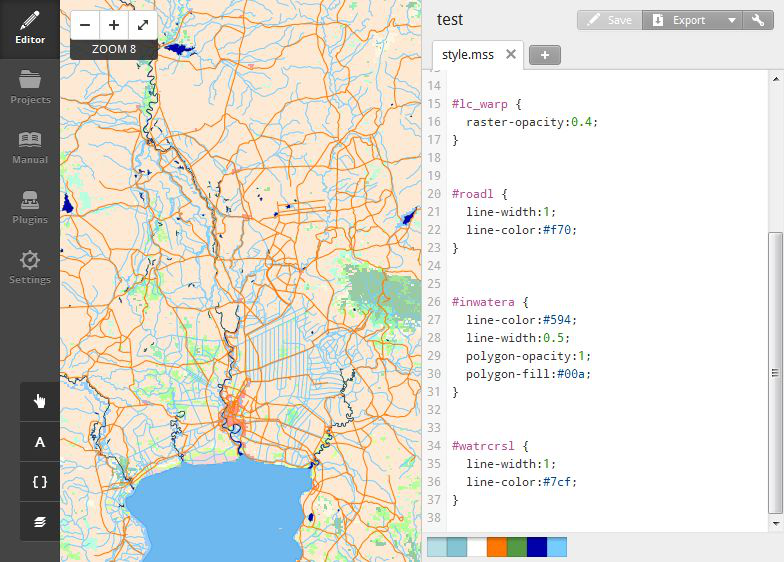
Chart 3-3-4． Display result of Code 3-3-1
Below are the examples of the map editing techniques.
・Utilization of pseudo-elements
The pseudo-elements in HTML/CSS are written after the element name and colon like 「p:fiirst-letter」 for instance. But the pseudo-elements in CartoCSS used in TileMill are different in terms of the function and way of writing as well.
As of the pseudo-elements in CartoCSS, the pseudo-element name is written following two colons like 「#layer::pseudoelem」. Any strings can be specified for the pseudo-element name. The pseudo-element is used when you want to combine multiple styles for one selector. Chart 3-3-5 is an example of bordering the line data.
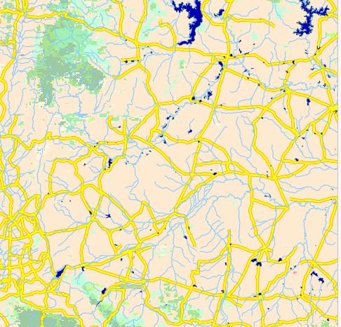
Chart 3-3-5． Example of bordering lines
To display the bordering as in Chart 3-3-5, draw wide lines first, then narrower lines with different color. If you write a code like Code 3-3-2 for this operation, the style written later will overwrites the earlier style.
Code 3-3-2
#roadl {
line-width:4;
line-color:#f70;
}
#roadl { // Only this style will be applied.
line-width:3;
line-color:#ff0;
}
So, multiple styles can be applied to a single layer by adding the pseudo-element to the second style like Code 3-3-3 to avoid overwriting.
Code 3-3-3
#roadl {
line-width:4;
line-color:#f70;
}
#roadl::cs { // Add the pseudo-element “:cs”
line-width:3;
line-color:#ff0;
}
As the style is applied in the order of writing, 4pixel-wide orange lines are drawn first and then 3pixel-wide yellow line, which gives the bordering effect. The style definition with no pseudo-element added is called default symbolizer.
・Condition-based symbol
By setting conditions to the object of style specifications, you can apply a style to the elements that have a specific attribute and change styles at each zoom level within a single layer.
In vector data, the attribute is given to the elements. To check the attribute of a vector layer in TileMill, click the table button in the layer window.
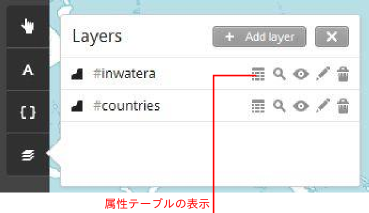
Chart 3-3-6． Display of attribute table
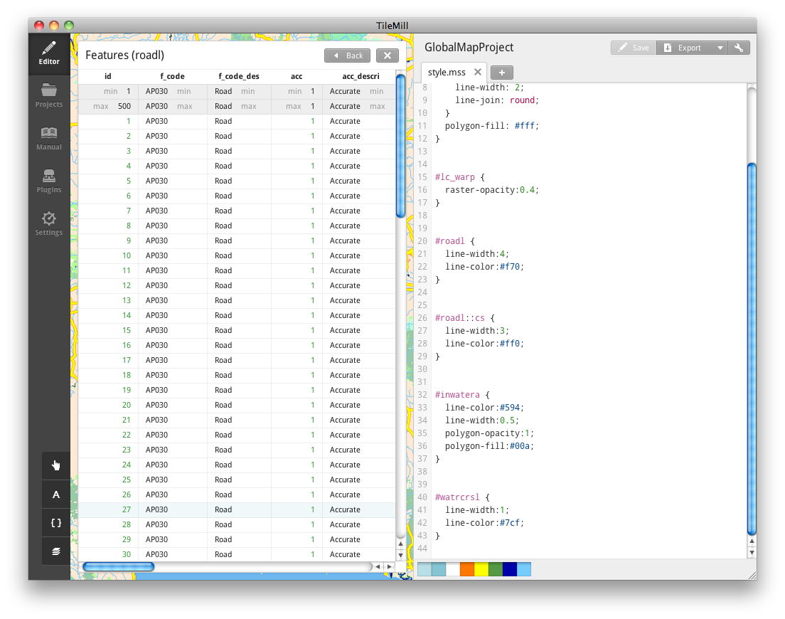
Chart 3-3-7． Display of attribute table
To change the style according to the attribute value, describe the condition of the attribute value like [attribute=value], then the style you hope to apply.
Code 3-3-4
#roadl {
[rtt_descri='Primary Route'] { // When the attribute “rtt_descri” is
::case { // 'Primary Route'
line-width:4; // When the attribute value is a character string,
line-color:#f70; // enclose with single quotation marks
}
::fill {
line-width:3;
line-color:#ff0;
}
}
[rtt_descri='Secondary Route'] { // When the attribute “rtt_descri” is
::case { // 'Secondary Route'
line-width:2;
line-color:#f70;
}
::fill {
line-width:1;
line-color:#ff0;
}
}
}
Or, the condition can be written right after a selector as in Code 3-3-5.
Code 3-3-5
#roadl [rtt_descri='Primary Route'] {
::case {
line-width:4;
line-color:#f70;
}
::fill {
line-width:3;
line-color:#ff0;
}
}
#roadl [rtt_descri='Secondary Route'] {
::case {
line-width:2;
line-color:#f70;
}
::fill {
line-width:1;
line-color:#ff0;
}
}
The execution result of the code above is as follows. You can see that the width of the main roads differs from that of other roads.
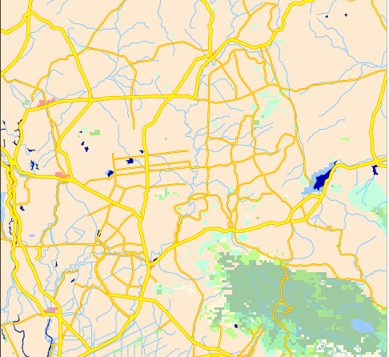
Chart 3-3-8． Execution result of Code 3-3-4, 3-3-5
In the code above, the default style is not defined. It is better to define the default style if some display is necessary even when not all the conditions are fulfilled.
For the condition specification of the attributer value, a sign of inequality can be used for a numeric type. Also, regular expressions can be used for a text type.
For the condition specification of zoom level, such designation as 「zoom=」 or 「zoom >」 is possible. The below is an example that the style in the case of zoom level being less than 7 is added in addition to the conditions above.
Code 3-3-6
#roadl {
[rtt_descri='Primary Route'] {
::case {
line-width:4;
line-color:#f70;
}
::fill {
line-width:3;
line-color:#ff0;
}
}
[rtt_descri='Secondary Route'] {
::case {
line-width:2;
line-color:#f70;
}
::fill {
line-width:1;
line-color:#ff0;
}
}
[zoom <= 7] { // Condition specification of zoom level
[rtt_descri='Primary Route'] {
line-width:2;
line-color:#f70;
}
[rtt_descri='Secondary Route'] {
line-width:1;
line-color:#f70;
}
}
}
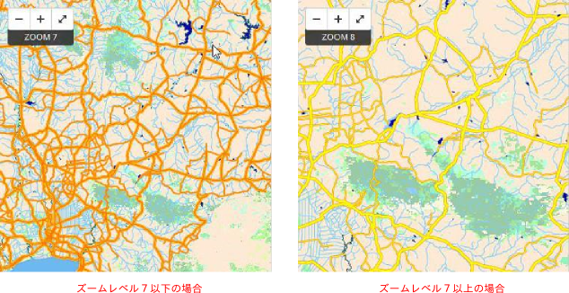
Chart 3-3-9． Different styles for each zoom level
・Display of text label
Text-name property is used to display the attribute value of each element as a text label. In the code example below, the administrative district names are displayed as text labels disabling the fill of the administrative district polygons.
Code 3-3-7
#polbnda {
::shape {
line-color:#700;
line-width:2.5;
polygon-opacity:0; // Disabling the fill of polygons
polygon-fill:#ae8;
}
::label {
text-face-name: "Times New Roman Bold Italic";
text-name:"[nam]"; // Specify the attribute displayed as a label in [nam].
}
}
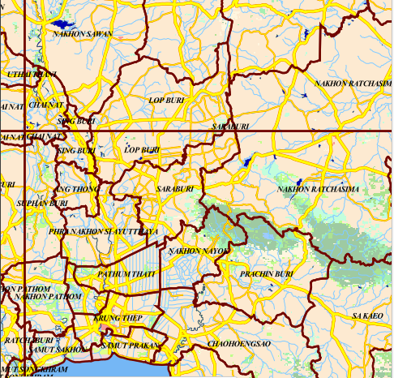
Chart 3-3-10． Execution result of Code 3-3-6
The code above is the easiest setting example of text labels. Different styles are allocated to the text label and element by the pseudo-element. In this way, a mutual text label can be used for all the elements even when using different styles of elements by condition,
Attribute values used for text labels can be multiple. In such a case, character strings can be combined with 「+」.
Code 3-3-8
#polbnda {
::shape {
line-color:#700;
line-width:2.5;
polygon-opacity:0;
polygon-fill:#ae8;
}
::label {
text-face-name: "Times New Roman Bold Italic";
text-name:"[id] + ':' + [nam]"; // Enclose the value with double quotations.
// Fixed character strings are enclosed
// with single quotations.
}
}
The font to be used as a label is specified in text-face-name property. To check the fonts available, click 「A」 at the bottom left.
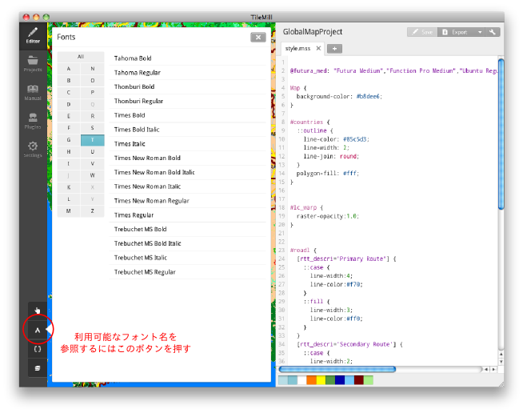
Chart 3-3-11． Display of font list
As of a text label style, not only the font but also the text size, color and bordering effect of the label can be set. The following is an example of the specification of a text label and its execution result.
Code 3-3-9
#polbnda {
::shape {
line-color:#700;
line-width:2.5;
polygon-opacity:0;
polygon-fill:#ae8;
}
::label {
text-face-name: "Times New Roman Bold Italic";
text-name:"[id] + ':' + [nam]";
text-size: 20; // Text sixe (pixel)
text-fill: #0077ff; // Text color
text-halo-fill: fadeout(#fefefe, 50%); // Color around the label
text-halo-radius: 5.0; // Area around the label
}
}
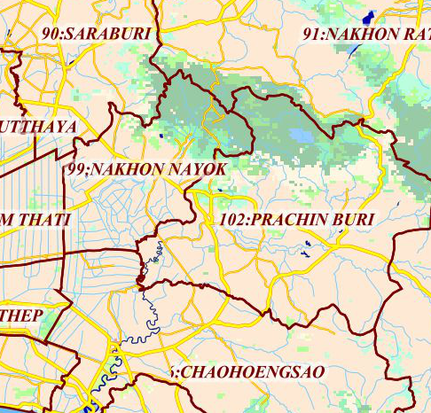
Chart 3-3-12． Execution result of Code 3-3-9
In this example, 「fadeout(#fefefe, 50%)」 is specified as text-halo-fill property value . Here is specified the color with 50% of the transparency using color function. Refer to http://www.mapbox.com/carto/api/2.1.0/#color about the detail of color function.
To draw a label on a curved line such as a river, you need to display the label along the element. Below is an example of a label to a river layer.
Code 3-3-10
#watrcrsl {
line-width:1;
line-color:#7cf;
::label {
text-face-name: "Times New Roman Bold Italic";
text-name:"[nam]";
text-size: 10;
text-fill: #07f;
text-halo-fill: fadeout(#fefefe, 50%);
text-halo-radius: 2.0;
text-placement: line; // Specifying the label to be along the line
text-dy: 11; // Specifying the offset of the label position
text-max-char-angle-delta: 15; // as 10 pixel above
} // Maximum angle between characters
}
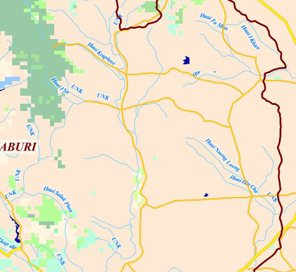
Chart 3-3-13．コExecution result of Code 3-3-10
・Setting line type
In addition to the line color and width, the type of lines can be specified for lines and those of polygon borders. Apart from simple broken lines, it is possible to define double lines using the pseudo-element explained above.
First we show the specification method of a simple dashed line.
Code 3-3-11
#polbndl {
::outline {
line-color:#700;
line-width:2.5;
line-dasharray: 20, 6, 3, 6;
}
}
The definition of dashed lines is performed in line-dasharray property. It is done by the array of numerical values as above. The array above is interpreted as following.
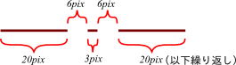
Code 3-3-14． Definition of dashed lines
Thus, the execution result of Code 3-3-11 is as shown below.
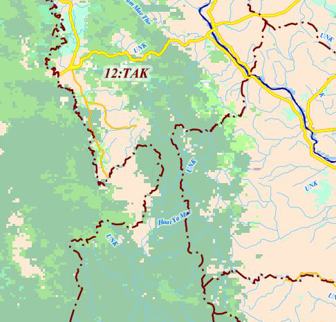
Code 3-3-15．Execution result of Code 3-3-11
By combining dashed lines, it is enabled to draw railway lines realistically. The following is an example of two types of railway lines.
Code 3-3-12
#railrdl {
::line {
line-width:2;
line-color:#444;
}
::tick { // Use broad dashed lines of wide interval as ticks
line-width: 8;
line-color: #444;
line-dasharray: 2, 48;
}
}
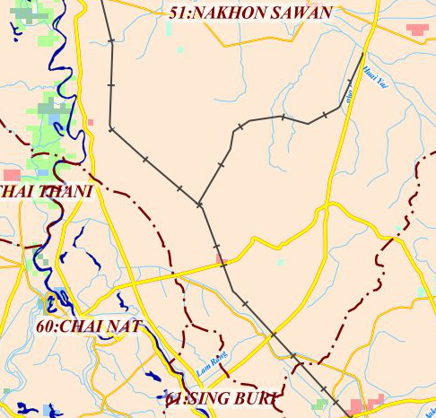
Chart 3-3-16． Execution result of Code 3-3-12
Code 3-3-13
#railrdl {
::line {
line-width:6;
line-color:#444;
}
::dash { // Superpose white dashed lines slightly narrower
line-width: 5; // than the main lines
line-color: #fff;
line-dasharray: 16, 16;
line-join: round;
line-cap: round;
}
}
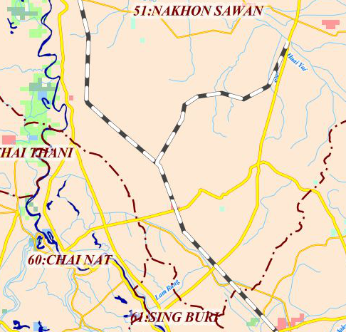
Chart 3-3-17． Execution result of Code 3-3-13
・Apply a custom symbol to a marker
A custom symbol you have made can be applied as a symbol to a point layer. SVG format and PNG format can be used for a custom symbol. As an example, we create a SVG symbol as in Chart 3-3-18. For creating a SVG symbol, Inkscape（http://inkscape.org/）was employed.
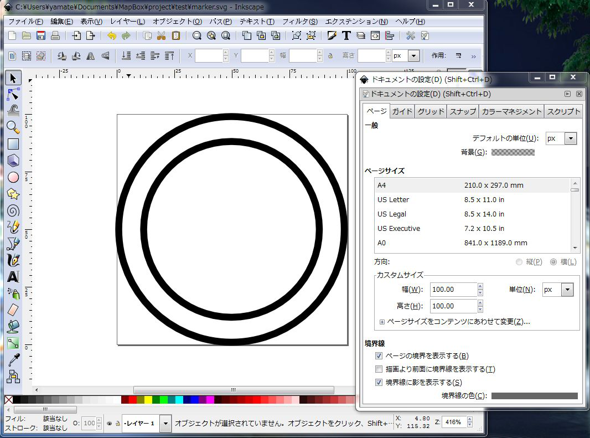
Chart 3-3-18． Custom symbol SVG
The SVG file created can be referred to by the absolute path or the relative path from the top directory of the project. The code below assumes that the file is saved as “marker.svg” in the top directory of the project.
Code 3-3-14
#builtupp {
::label [nam != 'UNK']{ // Label of the marker ３－３－１．
text-name: '[nam]';
text-face-name: "Arial Regular";
text-size: 12;
text-fill: #222;
text-wrap-width: 60;
text-wrap-before: true;
text-halo-radius: 2;
text-halo-fill: #fff;
text-min-distance: 2;
text-placement-type: simple;
text-dx: 10; // Label position to the marker
text-dy: -10; // Descending direction of Y-coordinate is “+”
}
::place {
marker-file: url('marker.svg'); // Specifying the self-created marker file
marker-width:20;
marker-allow-overlap:true;
}
}
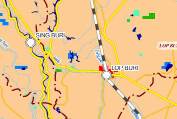
Chart 3-3-19． Execution result of Code 3-3-14
3-3-2． Addition of marginal information¶
In TileMill, a legend and pop-up can be added.
・ Legend
For adding a legend, click the pointer button at the lower left.
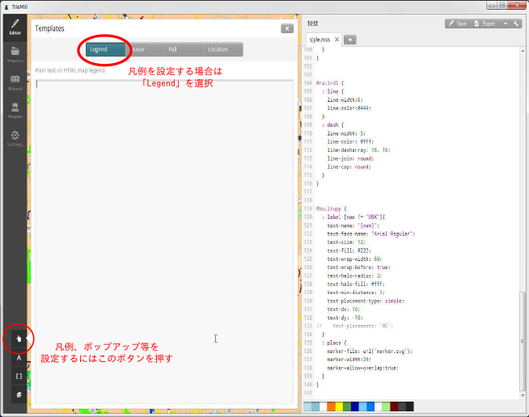
Chart 3-3-20． Legend editing window
A legend is written in HTML format. The following is a basic example.
Code 3-3-15
<strong>Global Map Thailand</strong><br />
For more information about Global Map, Please see
<a href="http://www.iscgm.org/cgi-bin/fswiki/wiki.cgi">International Steering Committee for Global Mapping</a> Web site.
<style type='text/css'>
.wax-legend a {
color: #00f;
}
</style>
The style to <a> element is defined by <style> tag in the code. Before this, there is a class selector “.wax-legend.” This is a class common to a legend and pop-up which is to be explained later.
In Chart 3-3-21 is shown the execution result of Code 3-3-15.
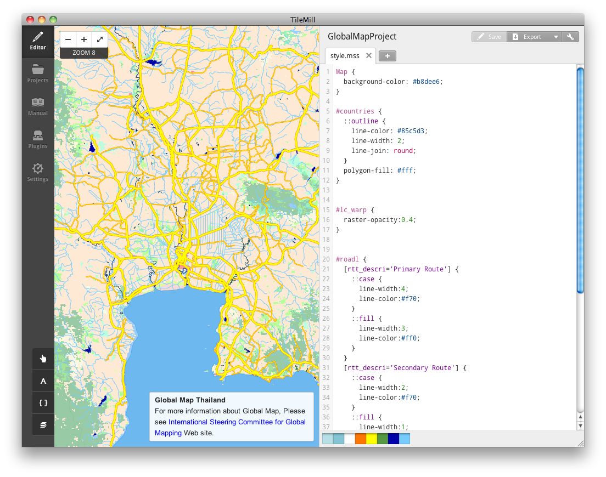
Chart 3-3-21． Example of a simple legend
Generally, the symbols on the map and their meanings are listed in a legend. Code 3-3-16 is a legend to a land use raster layer.
Code 3-3-16
<div class="legend">
<h2>Legend for landcover raster layer</h2>
<ul class="legend-labels">
<li><span style="background:#1a5100;"></span>Broadleaf Evergreen Forest</li>
<li><span style="background:#007a1f;"></span>Broadleaf Deciduous Forest</li>
<li><span style="background:#509600;"></span>Needleleaf Evergreen Forest</li>
<li><span style="background:#1eb900;"></span>Needleleaf Deciduous Forest</li>
<li><span style="background:#00da4d;"></span>Mixed Forest</li>
<li><span style="background:#47fd00;"></span>Tree Open</li>
<li><span style="background:#a2fe00;"></span>Shrub</li>
<li><span style="background:#53fdaf;"></span>Herbaceous, single layer</li>
<li><span style="background:#9afb9f;"></span>Herbaceous with Sparse Tree / Shrub</li>
<li><span style="background:#ffffcc;"></span>Sparse Vegetation</li>
<li><span style="background:#98e2fd;"></span>Cropland</li>
<li><span style="background:#fdcb94;"></span>Paddy field</li>
<li><span style="background:#ff0000;"></span>Urban</li>
<li><span style="background:#ffe7b3;"></span>Bare area, consolidated</li>
<li><span style="background:#caeffd;"></span>Bare area, unconsolidated</li>
<li><span style="background:#e89c94;"></span>Wetland</li>
<li><span style="background:#007fff;"></span>Water Bodies</li>
</ul>
<style type='text/css'>
.wax-legend ul {
padding: 5px;
border: 1px solid #999;
margin: 0;
margin-bottom: 5px;
float: left;
list-style: none;
}
.wax-legend ul li {
font-size: 80%;
list-style: none;
margin-left: 0;
line-height: 18px;
margin-bottom: 2px;
}
.wax-legend ul.legend-labels li span {
display: block;
float: left;
height: 16px;
width: 30px;
margin-right: 5px;
margin-left: 0;
border: 1px solid #999;
}
</style>
In the code above, a color is set as the background of <span> element not utilizing an image as the symbol of the legend. Also, the frames are drawn by the common style of <span> element.
The execution result of Code 3-3-16 is as follows.
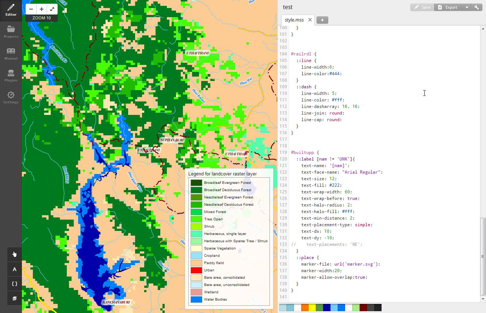
Chart 3-3-22． Legend of raster layer
・Display of a pop-up
A pop-up is the display of information which appears when the mouse cursor is superposed on a feature on a map or when a feature is clicked. A legend is displayed all the time. On the other hand, a pop-up window is shown only when an event occurs.
For setting a pop-up, click the pointer button at the lower left and select 「Teaser」or 「Full」 at the top of the window that appears. Select 「Teaser」 if you want to display the pop-up when the mouse cursor is superposed on a feature, and select 「Full」 if you want it when a feature is clicked.
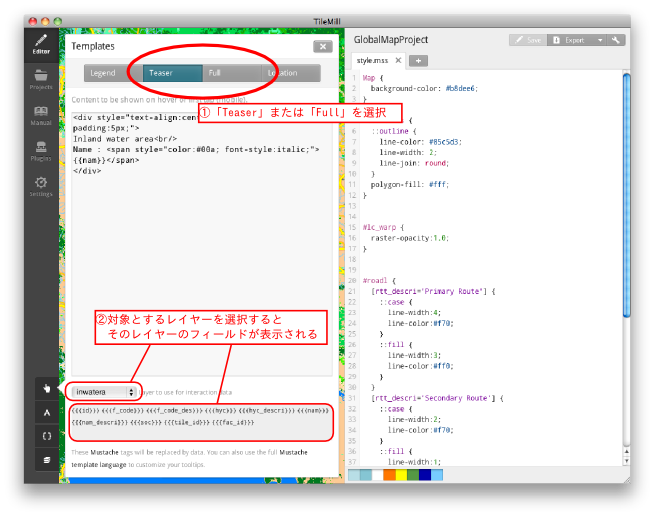
Chart 3-3-23． Edition of pop-up
There is a combo box where you select a target layer for the pop-up at the bottom of the pop-up edition screen as in Chart 3-3-23. Select a layer and the fields of the layer selected are listed in the pane. Here choose the fields to be displayed at the time of pop-up.
The following is a code example to display a name with an inland waters layer as a target.
Code 3-3-17
<div style="text-align:center; background-color:#8ff; padding:5px;">
Inland water area<br/>
Name : <span style="color:#00a; font-style:italic;">{{nam}}</span>
</div>
The execution result when Code 3-3-7 is input in 「Teaser」 is as below.
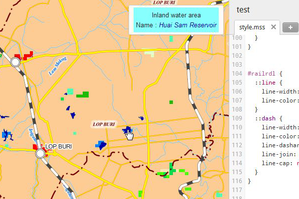
Chart 3-3-24． Pop-up when Teaser is selected
The following is the execution result when Code 3-3-17 is input in 「Full」.
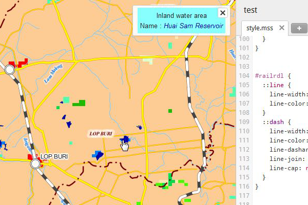
Chart 3-3-25． Pop-up when Full is selected
When it is input in 「Full」, the pop-up continues to be displayed until 「×」 button is clicked.
Different layers cannot be set for 「Teaser」 and 「Full.」